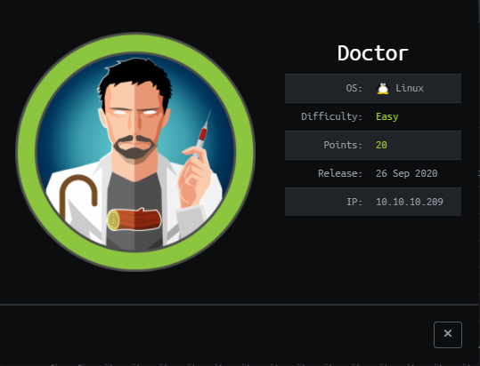
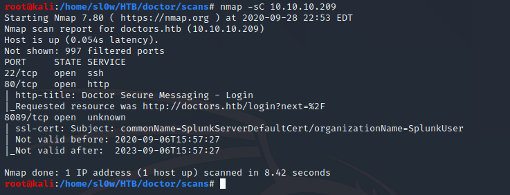
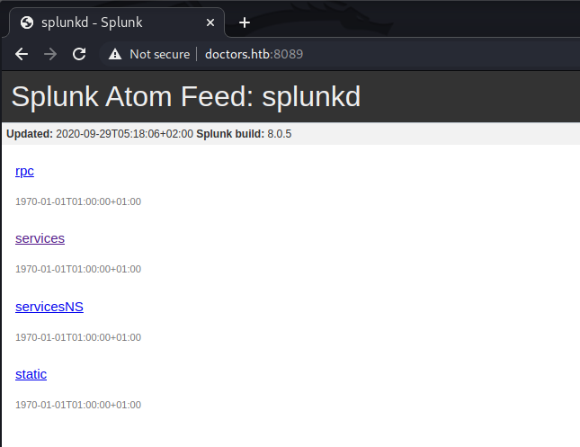
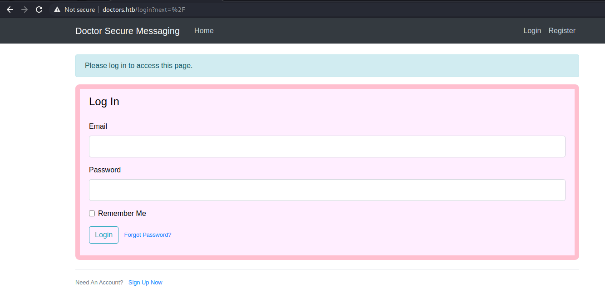

We start out with the usual nmap scan

Points of interest here are a web server on port 80 and some sort of splunk server running on 8089

We're not able to pull much info out of the splunk interface, since all the dirs require creds.
The contact us page on the webserver has a link to the domain doctors.htb , this was sort of login portal
